Installation and Integration¶
SDK¶
For each platform there is an SDK that contains:
Static library
Headers
Examples
Nightly build can be downloaded here: https://lief-project.github.io/packages/sdk while releases are available here: https://github.com/lief-project/LIEF/releases.
Python¶
Since 0.10.0¶
To install nightly build (master):
$ pip install [--user] --index-url https://lief-project.github.io/packages lief
Python packages can be found here: https://lief-project.github.io/packages/lief
To install release package
$ pip install lief
Release packages can be found here: Releases
Using setup.py, one can build and install lief as follows:
$ python ./setup.py [--user] install
LIEF modules can also be parameterized using the following options:
$ python ./setup.py –help …
—lief-test Build and make tests –ninja Use Ninja as build system –sdk Build SDK package –lief-no-json Disable JSON module –lief-no-logging Disable logging module –lief-no-elf Disable ELF module –lief-no-pe Disable PE module –lief-no-macho Disable Mach-O module –lief-no-android Disable Android formats –lief-no-art Disable ART module –lief-no-vdex Disable VDEX module –lief-no-oat Disable OAT module –lief-no-dex Disable DEX module
From 0.8.0 to 0.9.0¶
To install release package
$ pip install pylief-VERSION.zip
Release packages can be found here: Releases
Before 0.8.0¶
To install the Python API (example with Python 3.5):
$ pip install lief-XX.YY.ZZ_py35.tar.gz
Visual Studio Integration¶
The pre-built SDK is compiled in release configuration with the Multi-threaded runtime library.
As example we compile the following snippet with Visual Studio 2015
#include "stdafx.h"
#include <LIEF/LIEF.hpp>
int main()
{
std::unique_ptr<LIEF::PE::Binary> pe_binary = LIEF::PE::Parser::parse("C:\\Windows\\explorer.exe");
std::cout << *pe_binary << std::endl;
return 0;
}
First the build type must be set to Release:
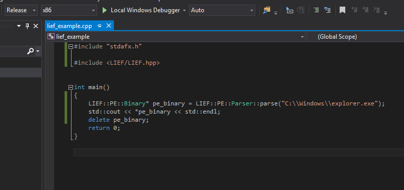
Build type set to Release¶
Then we need to specify the location of the LIEF include directory:
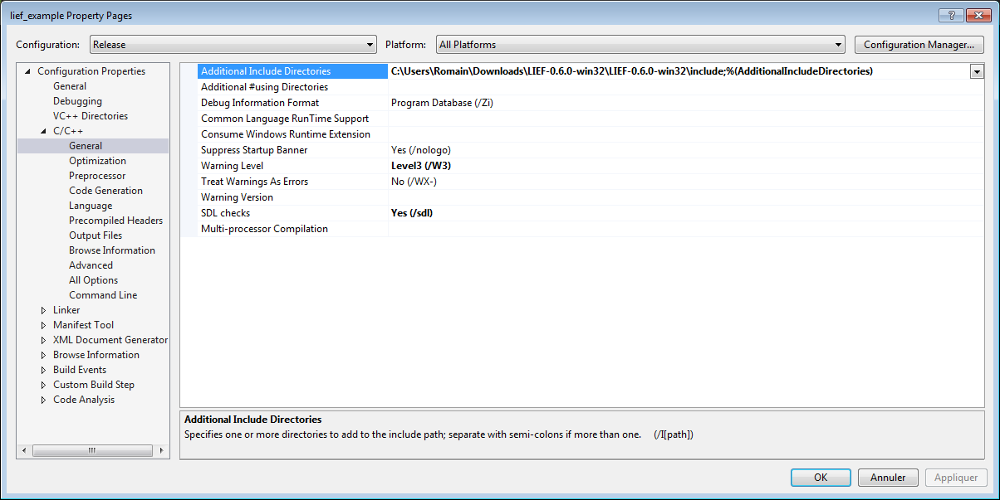
LIEF include directory¶
and the location of the LIEF.lib library:
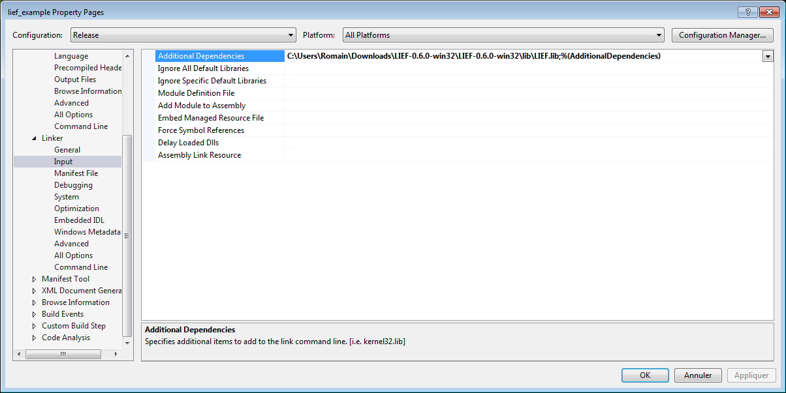
LIEF library¶
As LIEF.lib was compiled with the \MT flag we have to set it:
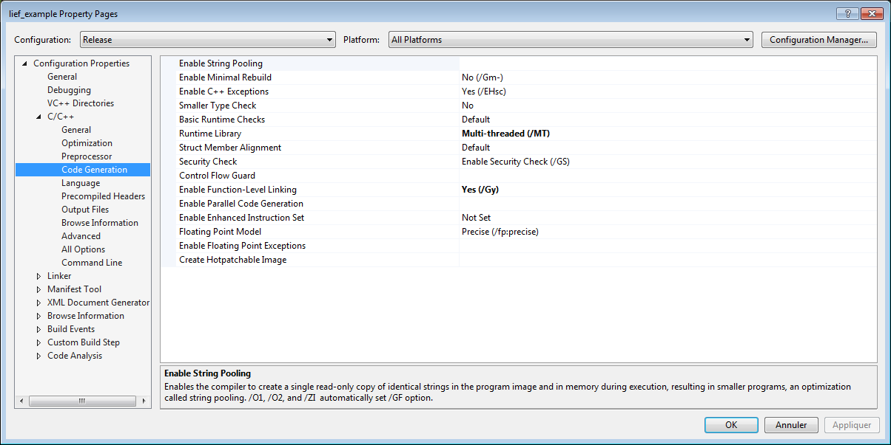
Multi-threaded as runtime library¶
LIEF makes use of and, or, not C++ keywords. As MSVC doesn’t support these keywords by default, we need to add the special file iso646.h:
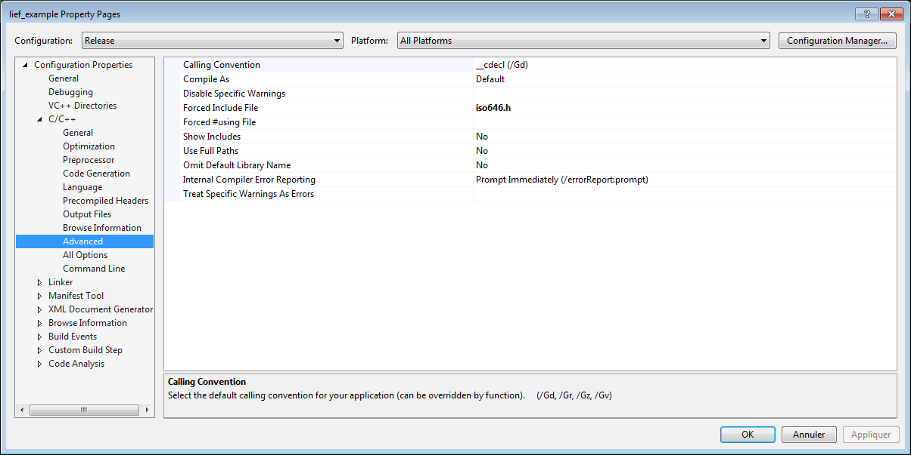
Add iso646.h file¶
XCode Integration¶
To integrate LIEF within a XCode project, one needs to follow these steps:
First we create a new project:
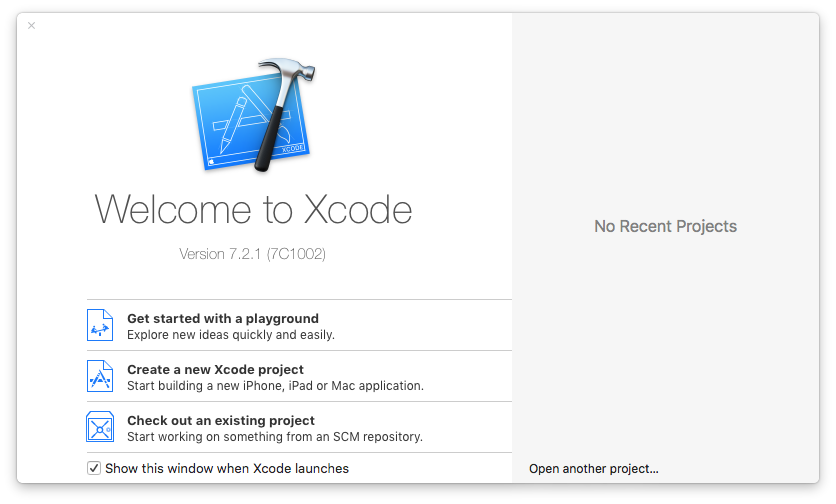
New Project¶
For this example we select a Command Line Tool:
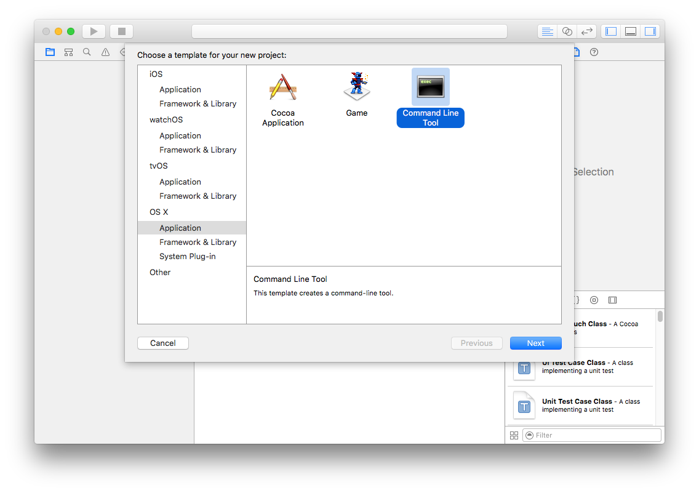
Command Line Tool¶
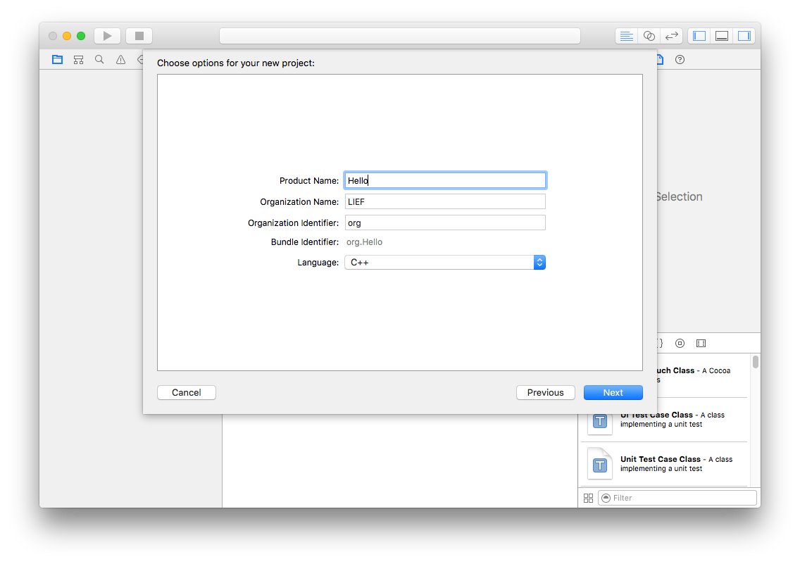
Project options¶
Then we need to add the static library libLIEF.a or the shared one (libLIEF.dylib)
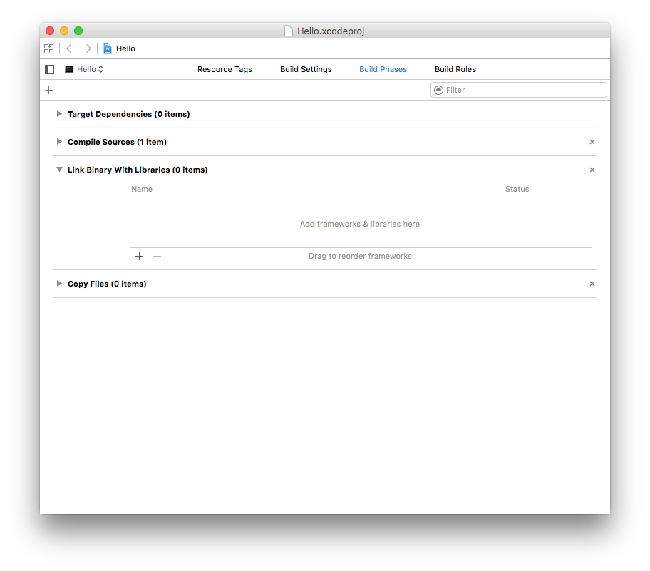
Project configuration - Build Phases¶
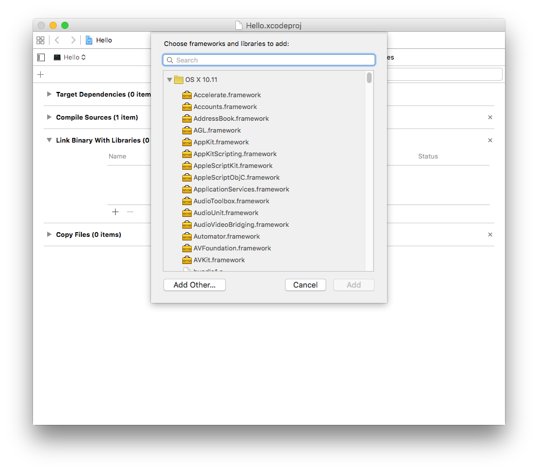
Project configuration - Build Phases¶
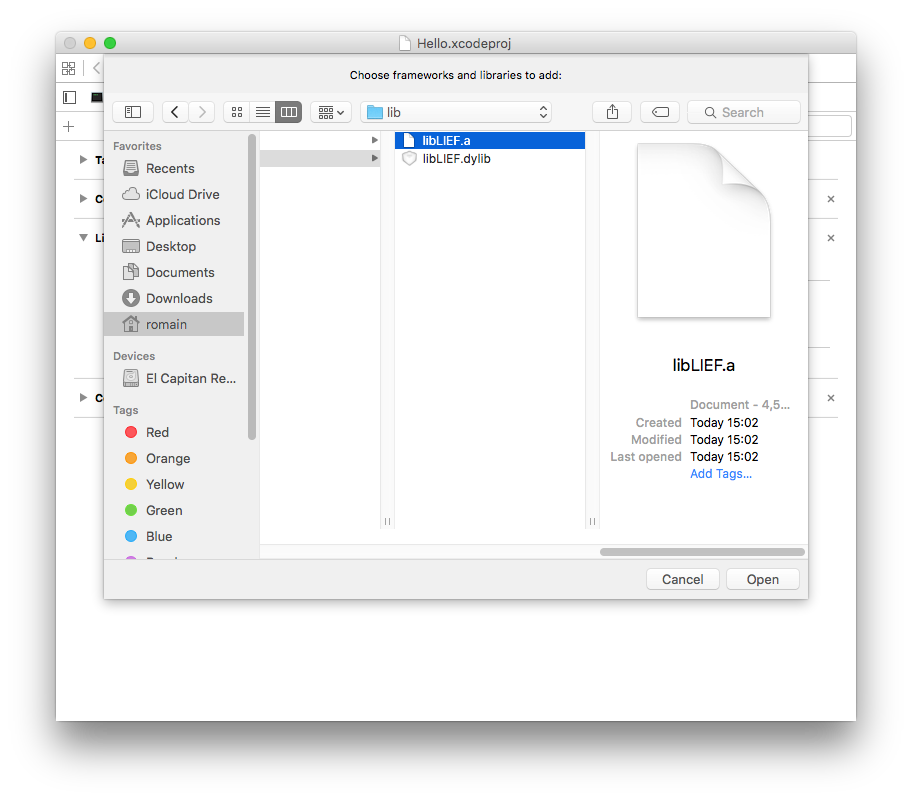
Project configuration - Build Phases¶
In the Build Settings - Search Paths one needs to specify the paths to the include directory and to location of the LIEF libraries (libLIEF.a and/or libLIEF.dylib)
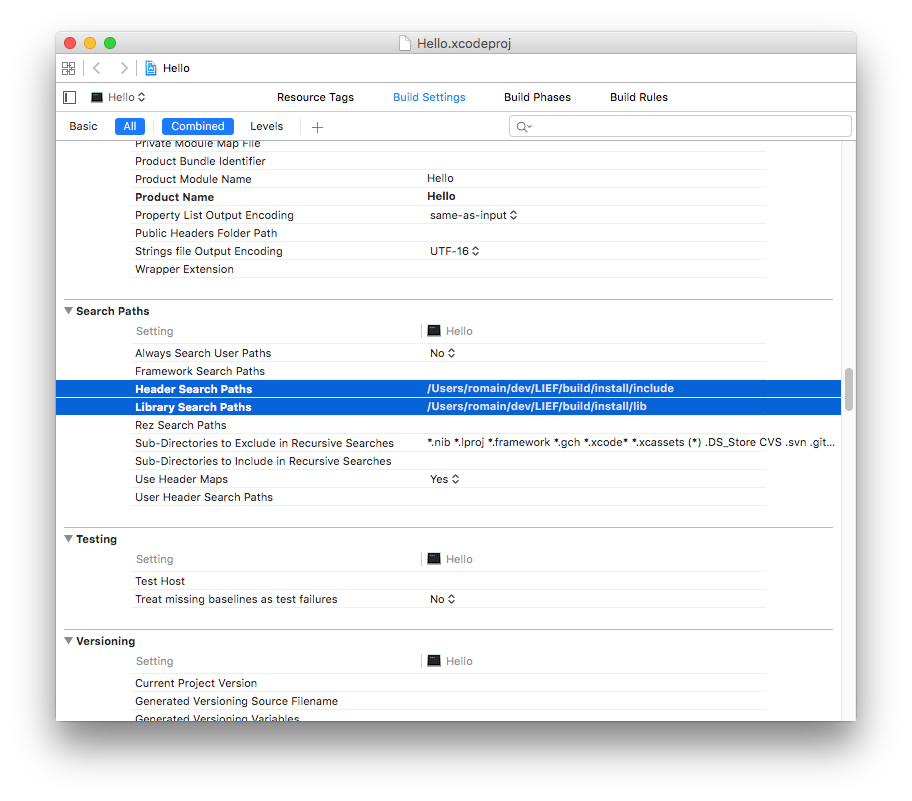
Libraries and Include search paths¶
Once the new project configured we can use LIEF:
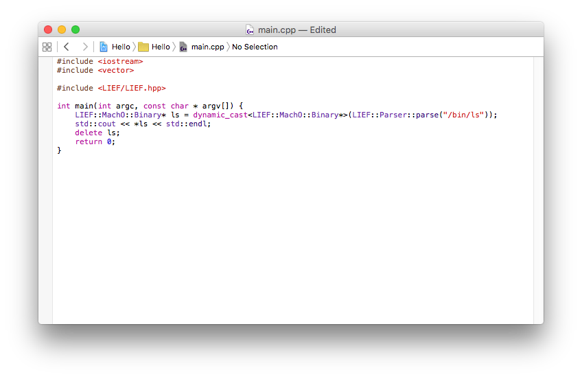
Source code¶
and run it:
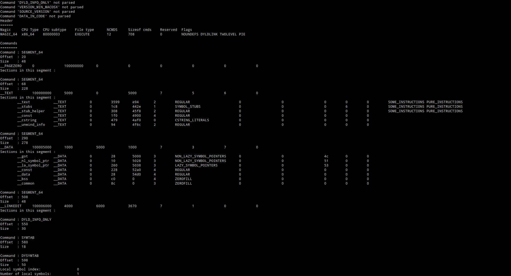
Output¶
CMake Integration¶
External Project¶
Using CMake External Project:
cmake_minimum_required(VERSION 3.02)
include(ExternalProject)
project(CMakeLIEF)
# LIEF as an External Project
# ===========================
set(LIEF_PREFIX "${CMAKE_CURRENT_BINARY_DIR}/LIEF")
set(LIEF_INSTALL_DIR "${LIEF_PREFIX}")
set(LIEF_INCLUDE_DIRS "${LIEF_PREFIX}/include")
# LIEF static library
set(LIB_LIEF
"${LIEF_PREFIX}/lib/${CMAKE_STATIC_LIBRARY_PREFIX}LIEF${CMAKE_STATIC_LIBRARY_SUFFIX}")
# URL of the LIEF repo (Can be your fork)
set(LIEF_GIT_URL "https://github.com/lief-project/LIEF.git")
# LIEF's version to be used (can be 'master')
set(LIEF_VERSION 0.9.0)
# LIEF compilation config
set(LIEF_CMAKE_ARGS
-DCMAKE_INSTALL_PREFIX=<INSTALL_DIR>
-DCMAKE_BUILD_TYPE=${CMAKE_BUILD_TYPE}
-DLIEF_DOC=off
-DLIEF_PYTHON_API=off
-DLIEF_EXAMPLES=off
-DCMAKE_CXX_COMPILER=${CMAKE_CXX_COMPILER}
-DCMAKE_C_COMPILER=${CMAKE_C_COMPILER}
)
if (MSVC)
list(APPEND ${LIEF_CMAKE_ARGS} -DLIEF_USE_CRT_RELEASE=MT)
endif()
ExternalProject_Add(LIEF
PREFIX "${PACKER_LIEF_PREFIX}"
GIT_REPOSITORY ${LIEF_GIT_URL}
GIT_TAG ${LIEF_VERSION}
INSTALL_DIR ${LIEF_INSTALL_DIR}
And now, to be integrated within a project:
# Add our executable
# ==================
add_executable(HelloLIEF main.cpp)
if (MSVC)
# Used for the 'and', 'or' ... keywords - See: http://www.cplusplus.com/reference/ciso646/
target_compile_options(HelloLIEF PUBLIC /FIiso646.h)
set_property(TARGET HelloLIEF PROPERTY LINK_FLAGS /NODEFAULTLIB:MSVCRT)
endif()
# Setup the LIEF include directory
target_include_directories(HelloLIEF
PUBLIC
${LIEF_INCLUDE_DIRS}
)
# Enable C++11
set_property(TARGET HelloLIEF PROPERTY CXX_STANDARD 11)
set_property(TARGET HelloLIEF PROPERTY CXX_STANDARD_REQUIRED ON)
# Link the executable with LIEF
target_link_libraries(HelloLIEF PUBLIC ${LIB_LIEF})
add_dependencies(HelloLIEF LIEF)
For the compilation:
LIEF CMake Integration Example - ExternalProject
================================================
.. code-block:: console
$ mkdir build
$ cd build
$ cmake ..
$ make
$ HelloLIEF /bin/ls # or explorer.exe or what ever
A full example is available in the examples/cmake/external_project directory.
find_package()¶
Using CMake find_package():
# Use LIEF with 'find_package()'
# ==============================
# Custom path to the LIEF install directory
set(LIEF_ROOT CACHE PATH ${CMAKE_INSTALL_PREFIX})
# Directory to 'FindLIEF.cmake'
list(APPEND CMAKE_MODULE_PATH ${LIEF_ROOT}/share/LIEF/cmake)
# include 'FindLIEF.cmake'
include(FindLIEF)
# Find LIEF
find_package(LIEF REQUIRED COMPONENTS STATIC) # COMPONENTS: <SHARED | STATIC> - Default: STATIC
And now, to be integrated within a project:
# Add our executable
# ==================
add_executable(HelloLIEF main.cpp)
if (MSVC)
# Used for the 'and', 'or' ... keywords - See: http://www.cplusplus.com/reference/ciso646/
target_compile_options(HelloLIEF PUBLIC /FIiso646.h)
set_property(TARGET HelloLIEF PROPERTY LINK_FLAGS /NODEFAULTLIB:MSVCRT)
endif()
# Setup the LIEF include directory
target_include_directories(HelloLIEF
PUBLIC
${LIEF_INCLUDE_DIRS}
)
# Enable C++11
set_property(TARGET HelloLIEF PROPERTY CXX_STANDARD 11)
set_property(TARGET HelloLIEF PROPERTY CXX_STANDARD_REQUIRED ON)
# Link the executable with LIEF
target_link_libraries(HelloLIEF PUBLIC ${LIEF_LIBRARIES})
For the compilation:
LIEF CMake Integration Example - find_package()
===============================================
.. code-block:: console
$ mkdir build
$ cd build
$ cmake -DLIEF_ROOT=<PATH_TO_LIEF_INSTALL_DIR> .. # By default, LIEF_ROOT=CMAKE_INSTALL_PREFIX
$ make
$ HelloLIEF /bin/ls # or explorer.exe or whatever
A full example is available in the examples/cmake/find_package directory.